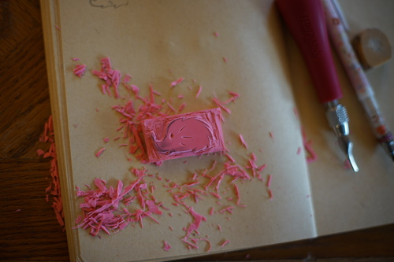
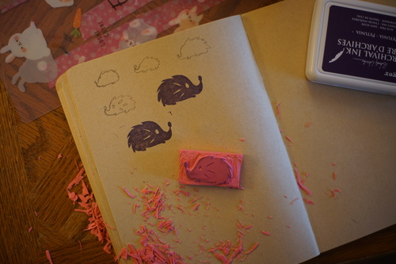

I have been having entirely too much fun chatting with hors and Flonne lately. It's only a matter of time before we induct Flonne into the SD WebHandHold... and also start a Kinoko Juice HandHold.
I didn't find out halloween was coming until my coworker told me it was 4 days away! I wasn't planning on decorating or carving a pumpkin because of it... but Ryan really wanted me to carve a pumpkin so we dragged one of those bad boys home. I kept putting it off until Halloween night.
I made little stuffed bell pepper jack-o-lanterns for dinner. They are so cute!!! I want to make them every year.
We had exactly 2 trick or treaters and a cat that cried on our porch for over an hour! He finally left to cry on someone else's porch and then the neighbors brought him back and said "here's your cat!" ;A;
I decided to carve woodstock in this year. It's a lot of effort to shave and I wasn't feeling it this year so I just went for plain carving. I didn't even think to use my linoleum cutter, but I'm not sure how hard it would have been to clean afterwards.
The next morning a little chunk was on the ground next to it! Did a small animal come for a snack?! I did see a baby squirrel eating someone else's rotting pumpkin on their porch. I wish I could have seen the one that ate mine!! I roasted the seeds with garlic salt and lemon pepper seasonings. They were a very good mix for it.
I found a pack of 6 pink erasers on clearance for 50 cents yesterday. I decided to buy them after reading the sentence in The Man in the High Castle where two characters used a carved eraser to make a business card stamp. You can do that?! You CAN do that!
You probably don't remember, but in blog 93, I bought a bag of stationery junk that included a speedball linoleum carver. I've used one of these in high school art class when we did block printing many many moons ago. I drew a little hedgie to carve into it and dug in! It was so much fun!!! I totally forgot! The rubber was hard to get details in and my lines werent perfectly smooth.
It snowed last night! I think it's that time of the year to start in on Christmas gifts. What should I make?! I've mostly given up on buying things because I feel like most gifts aren't wanted and are just donated or tossed anyway. I personally love getting handmade gifts, but don't tell me if you toss my handmade gift for you!
If you need any christmas gift ideas for me, I love Kinoko Juice auction dolls and chocolate. That's all I need in life!!